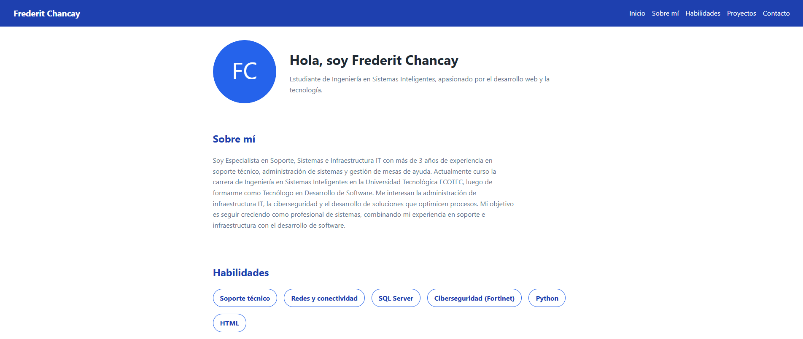
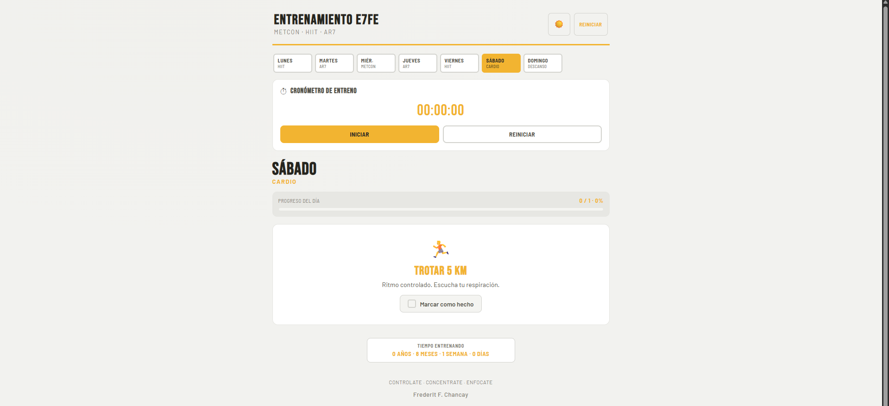
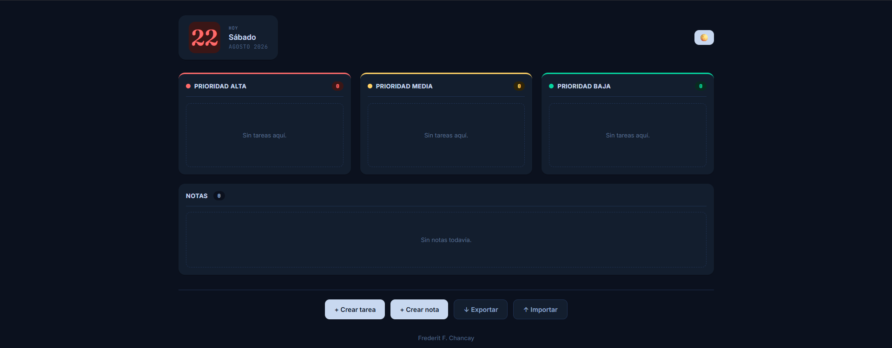

Soy Especialista en Soporte, Sistemas e Infraestructura IT con más de 3 años de experiencia en soporte técnico, administración de sistemas y gestión de mesas de ayuda. Actualmente curso la carrera de Ingeniería en Sistemas Inteligentes en la Universidad Tecnológica ECOTEC, luego de formarme como Tecnólogo en Desarrollo de Software. Me interesan la administración de infraestructura IT, la ciberseguridad y el desarrollo de soluciones que optimicen procesos. Mi objetivo es seguir creciendo como profesional de sistemas, combinando mi experiencia en soporte e infraestructura con el desarrollo de software.
Hola, soy Frederit Chancay
Estudiante de Ingeniería en Sistemas Inteligentes, apasionado por el desarrollo web y la tecnología.
Sobre mí
Habilidades
- Soporte técnico
- Redes y conectividad
- SQL Server
- Ciberseguridad (Fortinet)
- Python
- HTML
Proyectos

Portafolio personal
Sitio web desarrollado con HTML y CSS para presentar mi perfil, habilidades y proyectos académicos.
Ver repositorio
Entrenamiento
Aplicación web para crear y seguir un plan de entrenamiento semanal, con cronómetro de entreno y progreso diario.

Agenda
Aplicación web para organizar tareas por nivel de prioridad y crear notas tipo recordatorio.